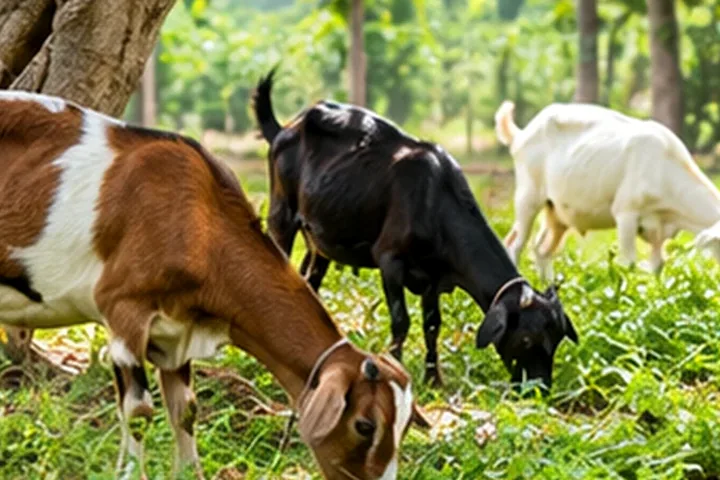
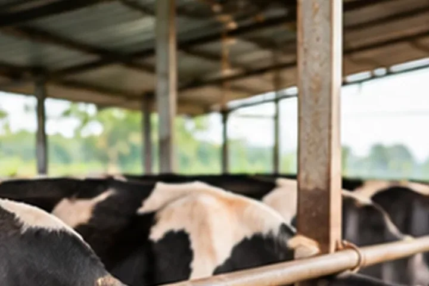
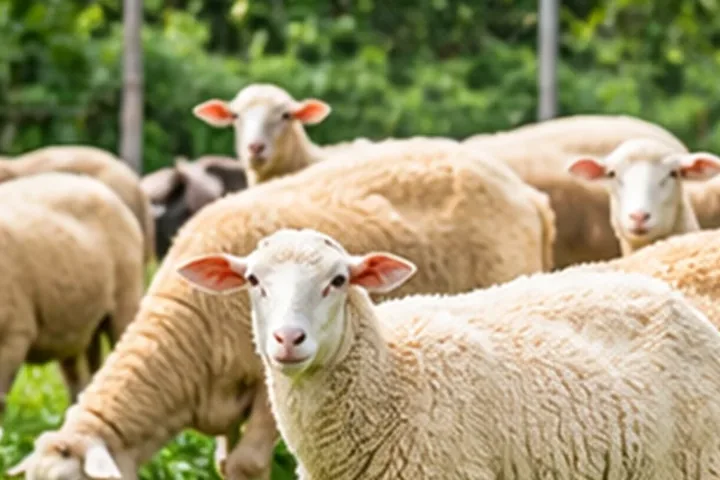
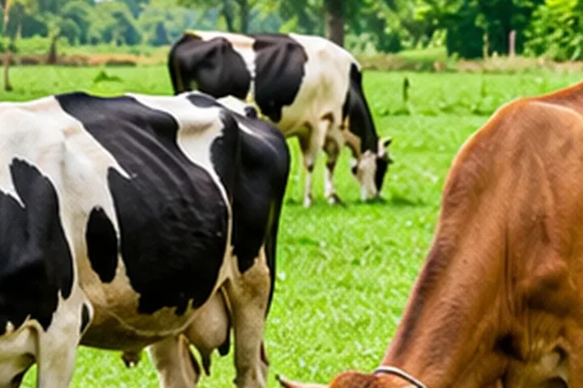
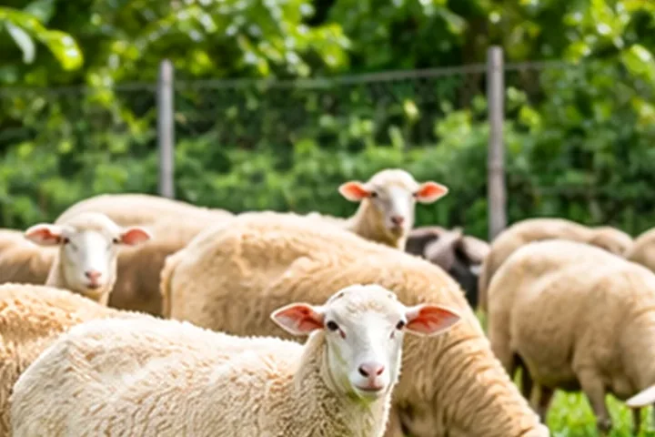
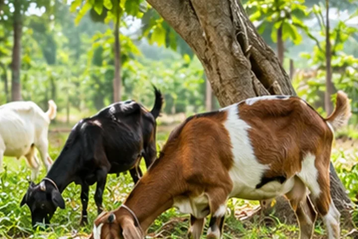
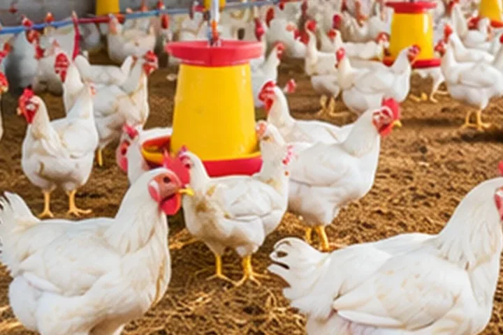
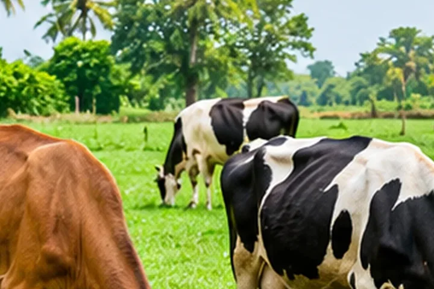
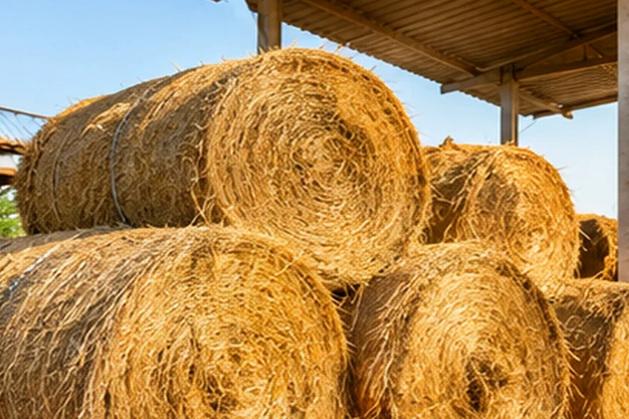
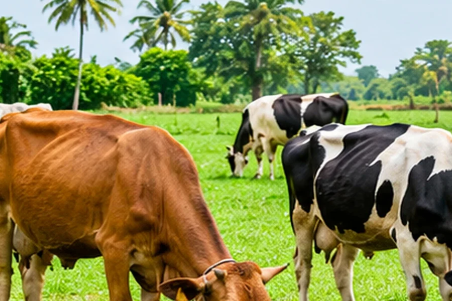

FEED & FODDER
DAILY LIVESTOCK CARE
HEALTHIER HERDSPRACTICAL FARM
SUPPORT
SUPPORT
FARMCARE SUPPLY · HOME 02
Everyday farm needs. Made easier.
From fresh fodder and livestock essentials to dairy and field supplies, explore practical categories built around the real rhythm of farm life. Clear descriptions help you understand where to begin, while our team is available when you need a little more guidance.
01 Farm-ready essentials02 Clear product guidance
01
Feed, animal care, dairy routines and farm operations are connected. FarmCare brings the essentials into one straightforward place, with helpful information at every step.
FARMCARE SUPPLYEXPLORE OUR EXPERTISE
Farm work, in connected disciplines.
Select a panel to bring its photograph and description into focus. Each area supports a different part of the everyday farm routine.
A BETTER WAY TO SOURCE
Farm essentials for every routine
Move through the categories to see how each one supports a different part of the farm. Select the arrows to bring a new photograph and explanation into focus, from livestock wellbeing and feed planning to poultry care and field operations.

01 / LIVESTOCK
Animal health & care
Everyday essentials for healthy, well-managed animals.

POULTRY CARE01 / 05
BUILT FOR REAL FARM ROUTINES
Less searching. More time for the work.
Farm routines are easier to manage when the right information is close at hand. Browse by need, compare relevant supply areas and keep the next action simple—whether you are planning animal nutrition, checking daily care essentials or preparing for seasonal work.
- Feed and fodder options
- Livestock and dairy care essentials
- Farm operation supplies
- Friendly product guidance
A CLOSER LOOK AT FARM LIFE
The details behind a well-run farm.
Good farm routines are built from many small, connected tasks. From checking the herd and keeping feeding areas clean to preparing fodder and maintaining the fields, each part contributes to a healthier, more dependable operation.
Explore the photographs to see the people, animals and everyday work behind the categories on this website. Each image can be opened for a closer look.
01 Daily animal checks and clean water
02 Feed planning and fodder preparation
03 Field work, equipment and farm upkeep
01 / Daily herd checks02 / Feed and fodder planning03 / Field preparation
A closer look at the animals, people and work behind every good season.
A PRACTICAL FARM VIEW
See what keeps the day moving.
From animal care to equipment and seasonal preparation, each part of farm life connects to the next. Explore four everyday areas below.

01 / FIELD WORK
Prepare the land
Plan field tasks and equipment needs before the busy season begins.

02 / FODDER
Store feed well
Keep fodder organised and protected for reliable daily feeding.

03 / OPERATIONS
Keep tools ready
Make equipment checks part of a clear and repeatable routine.

04 / POULTRY CARE
Keep spaces clean
Support healthy routines with clean housing, ventilation and regular observation.
A CLEARER WAY TO GET STARTED
Four simple steps. Better farm decisions.
From understanding what your farm needs to choosing useful supplies, follow a straightforward process that keeps each next step clear.

01
Understand
Start with your animals, farm setup and the everyday tasks you need to support.

02
Plan
Identify the feed, fodder, care products and equipment that fit your routine.

03
Choose
Compare relevant categories and ask for guidance when you need more information.

04
Keep moving
Build dependable habits for animal care, field work and seasonal preparation.
A PRACTICAL WAY FORWARD
Make each farm decision with a little more clarity.
Whether you are planning a routine purchase or exploring a new care category, a simple process helps you move from a question to a useful next step.
Start with the need
Identify the animal, supply category or farm task you want to support. A clear starting point makes it easier to find relevant information.
Explore the options
Review the categories and details that relate to your setup. Ask questions whenever suitability, quantity or availability needs clarification.
Choose the next step
Contact the team with your requirement and confirm the information you need before making a decision for your farm.
READY WHEN YOU ARE
Start a conversation Let’s make your next farm decision easier.
Share what your farm needs and we’ll help you take the next step.